Культурно-историческое наследие Обь-Иртышского бассейна — это отражение истории народов, традиций, архитектуры и памяти поколений. Иртыш объединяет города, культуры и события, которые формировали развитие Сибири и Казахстана. Этот проект создан для сохранения памяти о значимых объектах Иртышского бассейна и популяризации культурного наследия.
Проект посвящён исследованию культурно-исторического наследия Обь-Иртышского бассейна.
Главная цель работы — показать, насколько важен Иртыш для формирования истории,
архитектуры, культуры и памяти народов, проживающих вдоль реки.
Основные направления проекта:
• изучение памятных знаков и мемориалов;
• исследование архитектурных сооружений;
• знакомство с ансамблями и историческими комплексами;
• сохранение информации о достопримечательных местах Иртышского бассейна.
Тема была выбрана потому, что Иртыш является одной из крупнейших рек Евразии,
объединяющей множество культур и исторических событий. Его наследие представляет
важную ценность для будущих поколений и требует внимания и сохранения.
Памятные знаки Иртышского бассейна отражают важнейшие исторические события, героические подвиги, развитие Сибири и духовную память народов. Они создавались в честь исследователей, воинов, переселенцев и значимых событий, связанных с освоением территорий вдоль Иртыша. Эти объекты помогают сохранить историческую память и символизируют связь поколений.
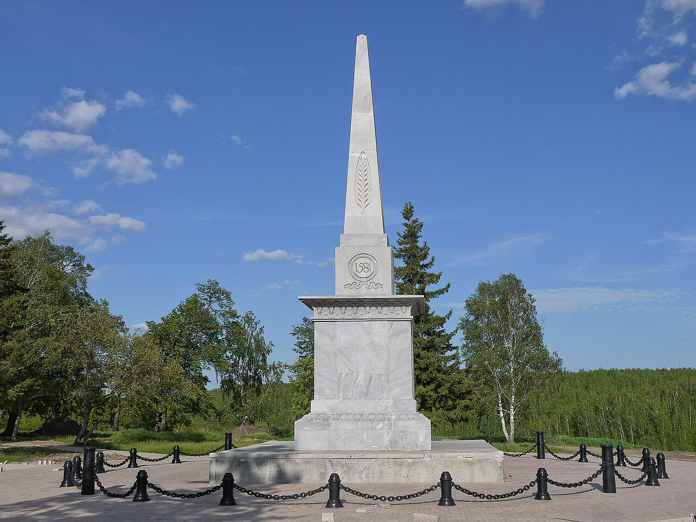
Один из символов освоения Сибири.
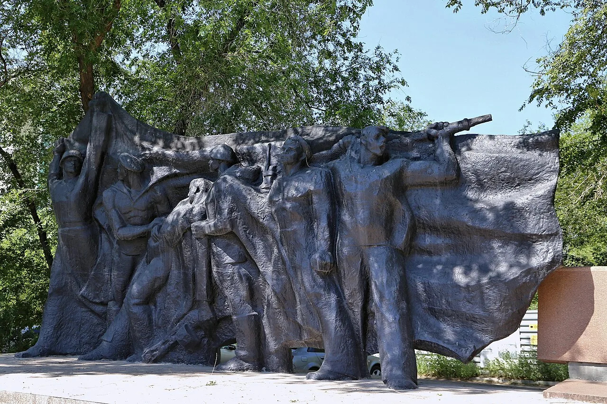
Исторический знак в Омской области.
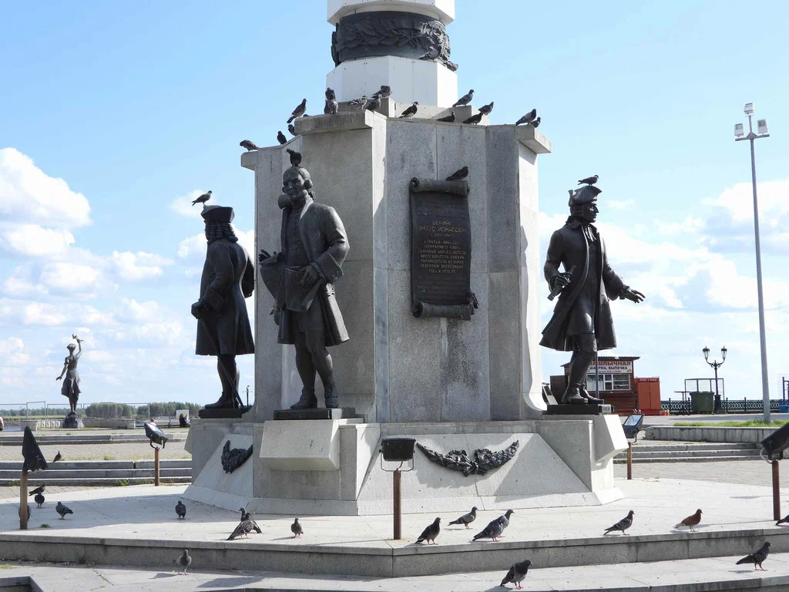
Символ освоения Прииртышья.
Сооружения Иртышского бассейна являются важной частью истории развития Сибири. Мосты, набережные, гидротехнические объекты и исторические постройки создавались для развития судоходства, торговли и городской инфраструктуры. Сегодня они являются не только инженерными объектами, но и символами единства, движения и развития региона.
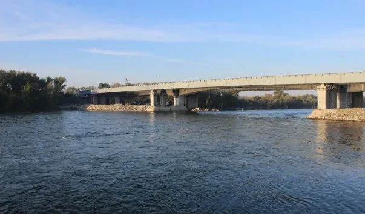
Крупное инженерное сооружение региона.
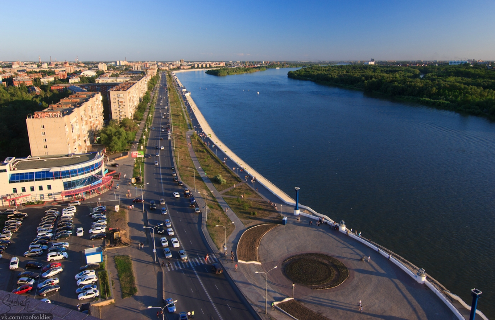
Популярное место отдыха и культуры.
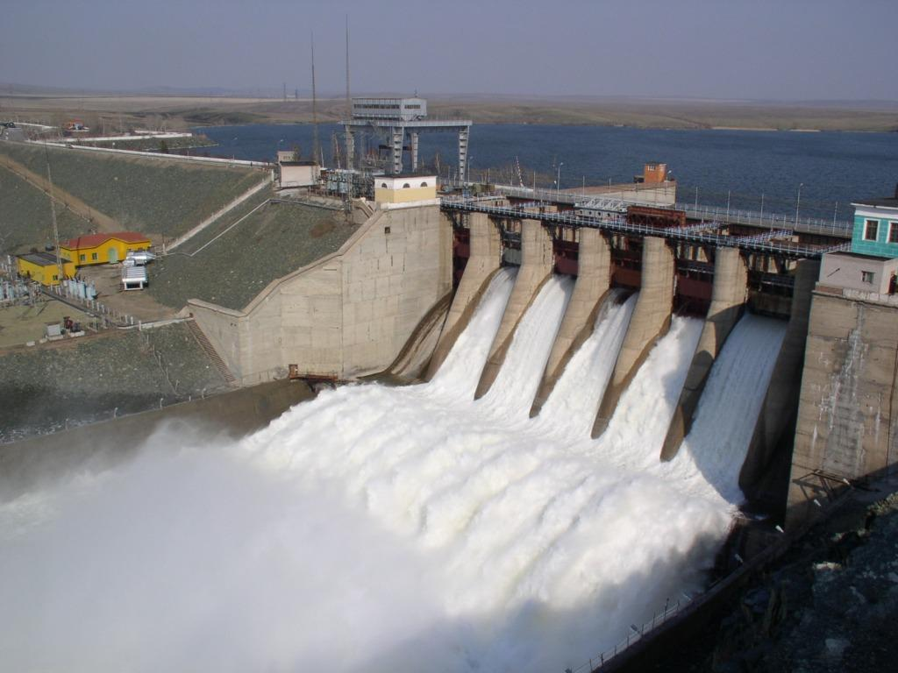
Важный объект речной инфраструктуры.
Архитектурные ансамбли Иртышского бассейна формировались на протяжении нескольких веков. Они объединяют исторические здания, площади, соборы и культурные центры, создавая единое пространство памяти и традиций. Эти ансамбли символизируют развитие городов Прииртышья и сохранение культурной самобытности народов региона.
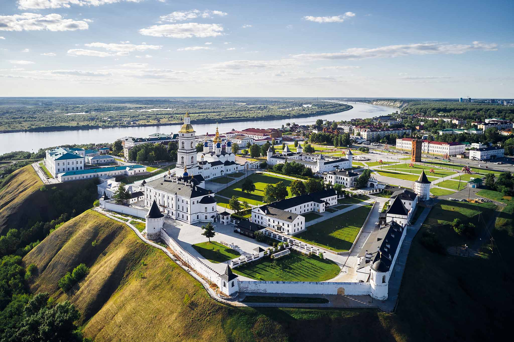
Архитектурный ансамбль сибирского города.
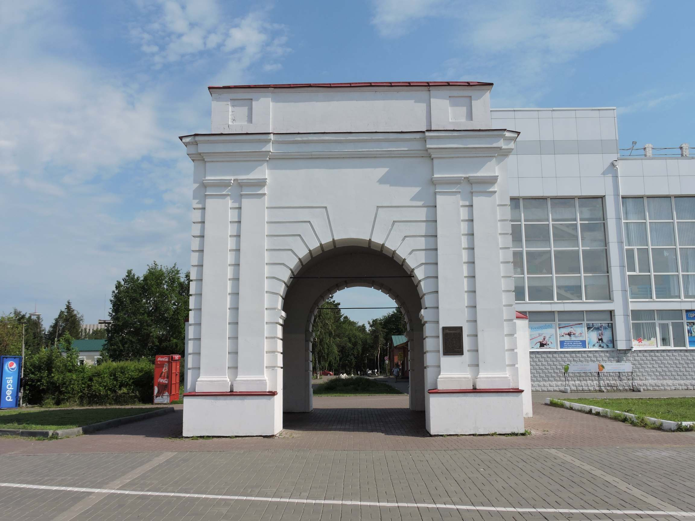
Историческая архитектура Иртышского бассейна.
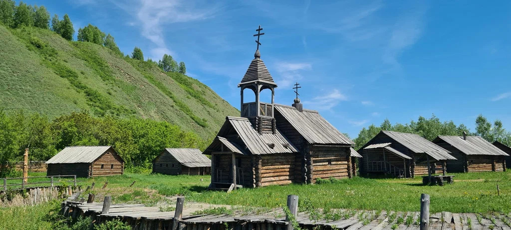
Историческое духовное наследие региона.
Достопримечательности Иртышского бассейна объединяют природные красоты, исторические места и культурные объекты. Они формировались под влиянием природы, истории и жизни людей, проживающих рядом с великой рекой. Эти места символизируют богатство и уникальность Обь-Иртышского региона.
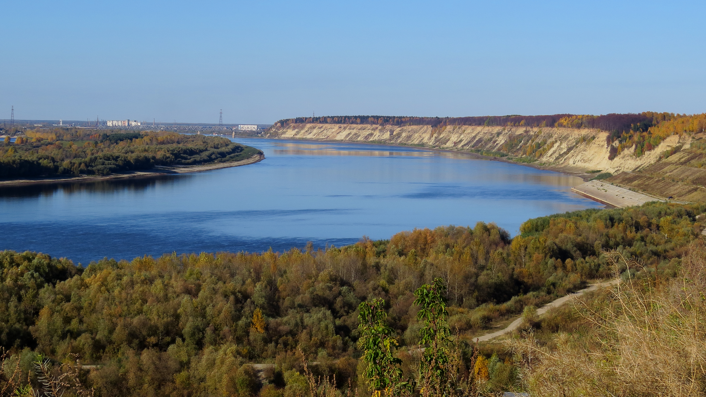
Природная красота великой реки.
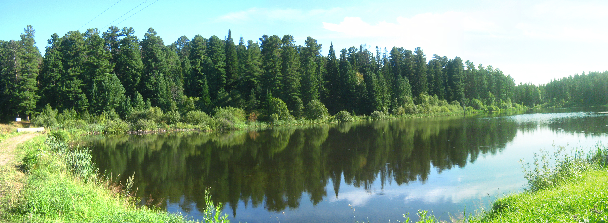
Уникальные природные зоны бассейна.
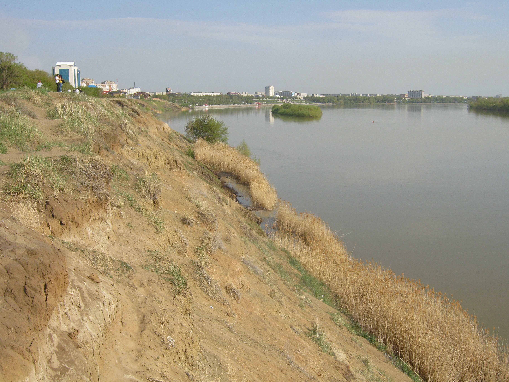
Красота природы и экосистем региона.